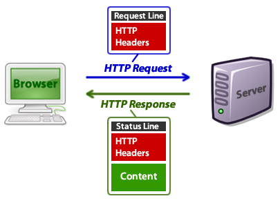

Les cerques per a entendre les antigues tecnologies d'Internet estan sent molt complicades. L'equip de Gunters amb habilitats hackers més avançades ens han enviat unes informacions, trobades en algun indret fosc de O A S I S, abans de desaparèixer per sempre...
La forma en la que estaven organitzades aquestes aplicacions web, és a dir, la seva arquitectura, era molt estranya. Aquests programes s'executaven entre dos llocs diferents: el navegador i els servidors.
Navegador: actua com a client i realitza peticions sol·licitant recursos als
servidors web. Quan fa una petició a un servidor i li respon enviant-li un
recurs, el mostra a l’usuari.
Servidor web: rep peticions de clients (navegadors) i respon a aquestes
peticions enviant un recurs o notificant un error si el recurs no existeix.
A més, per a la comunicació entre aquests dos elements, s'utilitzaven el protocol HTTP i el format HTML:

HTTP: protocol basat en TCP/IP que s’utilitza perquè el
navegador realitzi les peticions als servidor web i aquests li responguin.
HTML: format bàsic dels documents de la web. Es tracta d’un format
de text basat en etiquetes que permet estructurar el contingut de la pàgina.